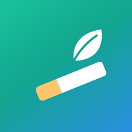

Quit smoking without the shame.
Unlit is a private tracker for Android that helps you cut down or quit. Every honest log counts as progress, even a cigarette, so you keep going after a slip.
Get it on Google PlayCraving SOS
A 5-minute breathing timer with coping cards and your own plans. Always free, never any ads.
Your pace
Follow a gentle weekly plan down to zero, or quit from a date you choose.
See it add up
Track what you didn't smoke, the money you saved and your smoke-free days.
Rewards that stay
Streaks, daily missions and 42 badges. Once earned, a badge is never taken away.
Know your triggers
See what sets off your cravings, and plan in advance what you'll do instead.
Private by design
No account. Your logs stay on your phone and the app works fully offline.
Unlit Pro
A one-time purchase, with no subscription, that removes ads and adds all your triggers, hour-by-hour insights, a custom plan length and color themes.
Not medical advice
Unlit is a self-help tracker, not a medical device. For anything about your health or quitting aids, talk to a doctor or pharmacist. Health milestones come from the World Health Organization.